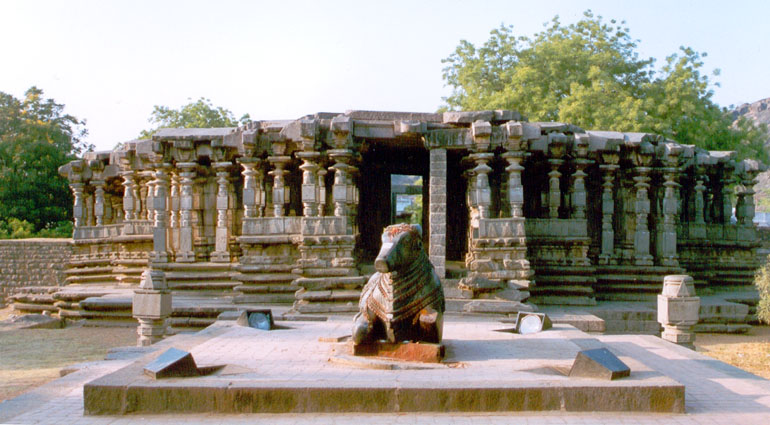

|
|
Warangal |
|

Warangal district is located in the northern region of the state of Telangana, India. The administrative seat is Warangal.
The district is at a distance of approx. 145 km from the state capital Hyderabad. Warangal District has an area of 12,846 km²,
and a population of 3,246,004 of which 19.20% was urban as of 2001.[2] The district is bounded by Karimnagar District to the north,
Khammam District to the east and southeast, Nalgonda District to the southwest, and Medak District to the west. Warangal is well
known for its granite quarries (notably the black and brown varieties) and as a market for rice, chili peppers, cotton, and tobacco.
The Warangal district headquarters is also Warangal. This includes Warangal, Hanamkonda and Kazipet areas the towns in the
district includes Parkal,Mahabubabad,Janagaon,Narsampet,Thorrur,Bhupalpally etc..
The city is a cluster of three towns - Warangal, Khazipet and
Hanamkonda.Today the city of Warangal offer for the connoisseurs of art, architecture and nature, a rich spread.
Warangal was the capital of a Hindu Shaivite kingdom ruled by the Kakatiya dynasty from the 12th to the 14th centuries. The old name of this newly formed city is Orugallu. 'Oru' means one and 'Kallu' means stone. The entire city was carved in a single rock, hence the name Orukallu meaning 'one rock'. The city was also called Ekasila nagaram. The Kakatiyas left many monuments, including an impressive fortress, four massive stone gateways, the Swayambhu temple dedicated to Shiva, and the Ramappa temple situated near Ramappa Lake. The cultural and administrative distinction of the Kakatiyas was mentioned by the famous traveller Marco Polo. Famous or well-known rulers included Ganapathi Deva, Prathapa Rudra, and Rani (queen) Rudramma Devi. After the defeat of Prataparadura, the Musunuri Nayaks united seventy two Nayak chieftains and captured Warangal from Delhi sultanate and ruled for fifty years. Jealousy and mutual rivalry between Nayaks ultimately led to the downfall of Hindus in 1370 A.D and success of Bahmanis. Bahmani Sultanate later broke up into several smaller sultanates, of which the Golconda sultanate ruled Warangal. The Mughal emperor Aurangzeb conquered Golconda in 1687, and it remained part of the Mughal empire until the southern provinces of the empire split away to become the state of Hyderabad in 1724 which included the Telangana region and some parts of Maharashtra and Karnataka. Hyderabad was annexed to India in 1948, and became an Indian state. In 1956 Hyderabad was partitioned as part of the States Reorganization Act, and Telangana, the Telugu-speaking region of Hyderabad state which includes Warangal, was joined to Andhra Pradesh.